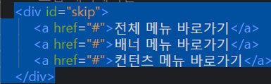
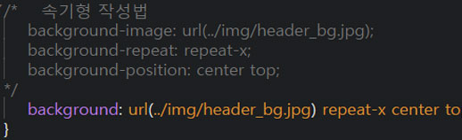

2020.03.10
브라켓 확장기능
- Custom Work : 상단에 탭 메뉴 기능
- beauty : 코드 정렬
- Indect Guide : 코딩 라인 가이드
- li 여러개 만들기 : ul>li*10 TAB
브라켓 단축기
- 복사하기 : CTRL + C
- 붙여넣기 : CTRL + V
- 전체 복사하기 : CTRL + A
- 선 4칸 띄우기 : TAB
- 선 뒤로 넘기기 : SHIFT + TAB
- 줄 복사하기 : Ctrl+ D
- 새로운 HTML 만들고 기본툴 만들기 : !적고 TAB 누르면 만들어짐(단 Emmet가 설치 되어야 가능(확장 기능 관리자))
브라켓 영어단어
- alt : 사진 이미지가 안보일시 글자로 설명
HTML
- HTML : HTML(HyperText Markup Language)은 웹 문서를 표현하기 위한 하이퍼텍스트 마크업 언어입니다.
- 태그 : 태그는 HTML에서 정보를 전달하는 방식을 의미합니다.
- 속성 : HTML 속성은 태그에 기본 기능 및 유형을 설정하고, 태그의 동작으로 제어하기 위한 용어입니다.
- 요소 : 요소는 MTML을 구성하는 가장 기본 단위입니다.
- 주석: 주석 표시는 프로그램에 영향을 미치지 않으며, 설명이나 메모를 목적으로 사용합니다.
CSS
- CSS : CSS(Cascading style sheets)는 HTML로 작성된 문서를 쓰기 위한 스타일 시트 언어입니다.
- CSS 선택자 : CSS 선택자를 통해 요소를 선택하고 속성을 줄 수 있습니다.
- 속성 선택자 : 속성 선택자(attribute selectors)속성 선택자를 사용하면 특정 속성이나 특정 속성값을 가지고 있는 HTML 요소를 선택할 수 있습니다.
- 선택자 : p와 같은 요소를 일컫는 명칭
- 속성 : 요소를 꾸미는 방법
- 속성 값 : 주어진 속성을 설정하기위한 속성 값
포토샵
- Efficiency 100% 만들기 : Window F8, 패널 옵션, Efficiency 체크
- 전경색 배경색 전체 색칠 : 전경색(Ait + Delete) 배경색(Ctrl + Delete)
- 사진 크기조절 : Ctrl + T
- 사진 앨범처럼 만들기 : 레이어말고 배경색 클릭 우측하단 f/x클릭 Skore 조절 Drop shadow 조절
- 파일 열기 : Ctrl + O
- 파일 만들기 : Ctrl + N
- 텍스트 글자복사 : Alt + 마우스 드래그
이미지
- 상업용이미지 다운 사이트(https://unsplash.com/)
- 컬러 색상 사이트(https://materializecss.com/color.html)
- 무료 폰트사이트(https://noonnu.cc/)
2020.03.11
포토샵 기능
- 텍스트 레이어 정렬 기능
- 텍스트랑 정렬할 레이어를 클릭후 무브툴을 누른채 상단 위 정렬 버튼들로 정렬
- Ctrl + E 레이어 합치기
Brackets 기능
- 줄복사 기능: Ctrl + d
- 자동완성기능: Ctrl + space바
2020.03.12
무료 상업용 사이트
- 상업용이미지 다운 사이트(https://unsplash.com/)
- 컬러 색상 사이트(https://materializecss.com/color.html)
- 무료 폰트사이트(https://noonnu.cc/)
HREF 링크걸기
- a + tab
- 백그라운드 컬러는 bgc만 쳐도 나온다 ex)bgc #ffffff
- <라고 하면 기호로 오른쪽으로 열리고 >를 쓰면 왼쪽으로 닫힌다
- side,contents에 float: left를 주면 footer가 인식하지 못해 float: left를 넣어야한다(2000년대 방식)
- margin 0 auto은 바깥여백을 가운데로 만들어준다. text-transform: uppercase은영어를 대문자로 만들어준다.
- https://entitycode.com/#common-content ntt 기호 넣는 코드 보는 사이트
2020.03.13
clear: both영향을 받지 않게한다.SHIFT + HOME브라켓에서 한줄 선택을 한다*브라켓에서 *표시를하면 전체를 말한다https://docs.emmet.io/cheat-sheet/ EMMET 단축키를 알려주는 사이트이다ulul은 홈페이지에서 ●와 같은 표시를 하게해준다olul은 홈페이지에서 숫자로 표시해준다margin0, padding0초기값을 설정해준다2020.03.16
Emmet 문법 사이트
CSS Class
.(id){ width:400px; }이렇게 사용함2020.03.17
브라켓
height: inheritheight: inherit를 주면 전부다 상속을 받는다marginmargin 0 auto를 주면 가운데로 이동한다line-heightline-height를 주면 정가운데로 이동한다 background: rgba(r,g,b,a(0~1));rgba값으로 색 설정 포토샵
자격증 시험
웹디자인 사이트
구글 크롬 확장기능
- Web Developer
- Full Page Screen Capture - 화면 캡쳐(주소창 옆에 캡처 모양이 있음)
2020.03.18
table 만들기
태그는 행(가로)를 나타냄
태그는 열(세로)를 나타냄
요소에서 rowspan속성은 아래쪽으로 셀을 합치는 속성이고, 속성값 "2"는 태그를 포함하여 2줄을 합치라는 뜻CSS Class
.(id){ width:400px; }이렇게 사용함2020.03.19
공부
- 취업을 하면 코딩이 더욱 복잡해지기 때문에 주석표시를 실용적으로 써주는게 좋다.
코딩
- 코딩 명령어 +는 친구를 생성해준다.
- active 는 옛날 버전에는 적용이 안되는 경우가 있다.
- <caption>은 시각장애우들을 위해 써야하는 언어이다.
- text-decoration : none; : 클릭 링크에서 밑줄을 사라지게해준다.
- link 코드에서 rel = relation (관계)를 의미한다.
- colspan = 가로를 합쳐준다.
- skip : 다음 섹션으로 건너 뛸 때 사용해준다.(웹 표준성 준수 할 때) 
- border는 테두리 줄색깔이다. 사방으로 테두리 줄 색깔을 주고 싶으면 bottom만 지우면 가능하다. 한꺼번에 사용 할 때는 세미클론(;)을 사용하면 안된다.
일러스트
- Ctrl + K : 새창열기
- 일러스트는 줄이 완성되야지만 코드를 불러올수있다.
- Ctrl + K : 후 Scale Strockes & Effects 를 누르면 줄이면 굵기도 같이 조절이된다.
2020.03.20
공부
decoration: 밑줄의 색상을 변경hove: 마우스를 오버했을 때 색상을 변경border: 테두리에 색을 주는 것../그 전 폴더로 가서 다른 이미지를 끌어 올 수 있음solid라인- 
- 드래그를 하고 Ctrl + / 를 누르면 드래그한 부분 주석표시 가능
2020.03.23
웹 표준 사이트
- http://darum.daum.net/convention/image
- http://nuli.navercorp.com
- http://www.wah.or.kr:444 (웹 접근성 연구소)
<span 태그>
<span>태그는 HTML 문서에서 인라인 요소들을 하나로 묶을 때 사용<span>요소는 그 자체만으로는 어떠한 의미도 가지지 않지만, class나 id와 같은 전역 속성과 함께 사용하여 스타일링을 위해 요소들을 그룹화하거나 lang속성과 같은 속성값을 공유하는 데 유용하게 사용<span>요소는 <div>요소와 매우 비슷하게 사용되지만, <div>요소는 블록 요소인데 반해 <span>요소는 인라인 요소
div:last-child (가상 클래스)
- 기존에 있던 선택자(타입 선택자, id 선택자, class 선택자, 전체 선택자 등)로는 구체적인 스타일을 줄 수가 없으므로 가상 클래스로 어떤 요소의 n번째 줄만 선택해서 스타일을 줄 수가 있음
:first-child부모 요소 안에 있는 첫번째 자식만을 선택할 수 있는 선택자:last-child부모 요소 안에 있는 마지막 자식만을 선택하는 선택자
list-style: none;
<ul>,<ol>,<menu>와 같은 블릿기호를 없앰
2020.03.24
공부
- nth-child(2) ie9 부터 적용
- .column.col$$*2>h3+p
- aria-hidden 불필요한거 숨김 접근성을 위한것
- 일러스트 선깨기 object Expend
- 일러스트 색넣기 object 선깬후 Live paint
relative기준점을 설정해주는 값aria-hidden: 속성을 사용하여 시각적으로 숨겨지지 않는 콘텐츠를 보조 기술에서 제외하기 위한 메커니즘을 제공한다. 요소에 이 속성을 적용하면 사실상 요소와 모든 하위 항목이 접근성 트리에서 제거된다.(우리나라 시각장애인들이 주로 사용하는 센스리더에서는 지원하지 않는다.)